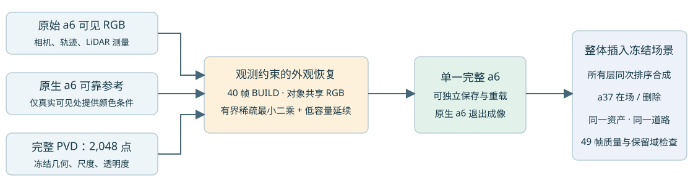

Scene008：从并存车身，转向单一完整 a6 资产
旧裁剪分支已收尾。本轮从完整 2,048 点 PVD 几何出发，冻结几何、尺度和透明度，用 a6 自己的真实可见 RGB 校正一份共享外观，然后整体替换原生 a6。无编辑与删除共用同一份资产。

这是完整资产替换的第一组强对照，尚未通过画质验收。工程上消除了原生 a6 与 PVD 并存的竞争；能否保住这辆车的已观测细节，必须另外看 RGB、深度与覆盖。此轮没有修改几何，也没有实现 MOG-2 不透明首交渲染。
先看对象本身
每帧各列共用同一裁剪。第一列只展示真实可见 a6，其余未知处黑底；第二列为原生 a6；第三列为完整 PVD 的观测条件参考色；第四列为同一几何拟合后的资产；第五列为固定几何的透明度。后窗、尾灯、轮廓和孔洞需直接对照。
raw113
推断外观保留来源标记：646 点达到至少两帧且累计贡献≥1像素的支持门槛，1,402 点仍标记为弱监督／推断。没有把隐藏车身纹理当成真实细节。
同一资产放回冻结街景
依次为原生场景a37在场、新资产a37在场、原生场景删a37、新资产删a37。新资产两种状态都不含原生 a6。背景为原生10K＋道路1K，另复用已保存的固定11×9世界道路颜色场；各对照完全相同。
分组成像贡献
依次为在场时新资产、a37，删除后新资产、旧静态层。全部来自同一次联合排序；这些图描述遮挡，不作为隐藏几何准确率。
固定分母：已观测 a6
RGB为sRGB通道平均绝对误差；深度单位米；覆盖为对象alpha；缺口为完整reviewed可见轮廓中alpha<0.5的比例。完整核心39308像素、实测深度8930点，所有方法相同；没有按新资产alpha缩小评价分母。
| 范围 | 资产 | RGB MAE | 深度 MAE / m | 可见核心覆盖 | 轮廓低覆盖比例 |
|---|
| 完整49帧 | 原生 a6 | 0.01873 | 0.26857 | 0.99989 | 0.00000 |
| 完整49帧 | 完整PVD＋参考色 | 0.06315 | 0.32646 | 0.98518 | 0.00132 |
| 完整49帧 | 完整PVD＋观测拟合 | 0.04951 | 0.32646 | 0.98518 | 0.00132 |
| 内部外观留出9帧 | 原生 a6 | 0.02049 | 0.30916 | 0.99989 | 0.00000 |
| 内部外观留出9帧 | 完整PVD＋参考色 | 0.06482 | 0.31969 | 0.98468 | 0.00160 |
| 内部外观留出9帧 | 完整PVD＋观测拟合 | 0.04982 | 0.31969 | 0.98468 | 0.00160 |
内部留出仅表示这9帧未参与本轮外观拟合。原生参考和PVD几何来自同场景上下文，PVD的200个条件点中有14点来自这些帧，不能宣称几何独立测试或跨场景泛化。
保留域：相对原生场景的变化
这里报告同状态新资产与原生基线的每像素RGB变化；超过0.05的像素数是局部损伤尾部，不能只用全图平均掩盖。变化不自动等于改善或损伤，需结合原始RGB和图像审查。
| 状态 | 区域 | 固定像素 | 平均RGB变化 | 变化>0.05像素 |
|---|
| a37在场 | 可见道路 | 1075281 | 0.00000 | 21 |
| a37在场 | 非目标保护区 | 6312448 | 0.00056 | 14522 |
| a37在场 | 可见a37 | 536128 | 0.00000 | 0 |
| 删除a37 | 可见道路 | 1075281 | 0.00004 | 252 |
| 删除a37 | 非目标保护区 | 6312448 | 0.00093 | 21558 |
实验合同与下一步
40帧BUILD，仅真实可见a6内部RGB；不读取被a37遮挡处的RGB。每个固定高斯使用一组共享SH0颜色，共6144个有界参数，稀疏岭回归λ=0.001。无观测区域使用对象内部全局低容量颜色延续。全资产几何哈希贯穿拟合、导出、重载与49帧评价保持一致。
首轮完整提案对照未通过已观测质量验收。原生资产有100,358颗高斯、三阶SH，新资产只有2,048颗高斯、SH0，因此当前差距同时包含空间分辨率、表面对齐与外观容量因素，不能唯一归因于PVD几何。完整核心覆盖已达0.9852，内部缺覆盖也不是充分解释。后续主框架应让可靠实测表面与先验共同约束同一份资产：依次检验固定几何下的外观容量、统一表面的采样分辨率，最后单独开放实测约束下的受限几何校正。每一步保留独立对照。规则依赖观测可靠性和表面距离，不依赖遮挡发生在下部、左部、右部或上部。
观测支持／固定设计审计 · 原生与新资产容量审计 · 下一阶段单一资产实验合同（设计，未运行）
原生a6对象层的100,358行已全部退出新场景输入。冻结的旧静态层仍可能有残留贡献，本轮没有宣称解决所有外部静态遮挡。
3帧真实GPU smoke覆盖联合渲染、分组贡献守恒、非均匀随机颜色的稀疏设计一致性，以及资产保存／恢复／后续入口。原道路1K接口重放最大RGB差5.96×10⁻⁸。实际外观求解约62秒；没有启动长程神经训练。AutoDL保持开机。
资产与可复核记录
完整资产NPZ（几何、颜色、来源标记） · 标准SH0高斯PLY · 独立资产加载／渲染接口 · 全部固定指标 · 指标CSV · 验收状态 · 旧分支收尾
预定合同 · 完整PVD来源 · 外观求解 · 49帧逐项指标
观测口径与限制
- visible[0] is the reviewed FRONT a6 mask eroded once, excluding the other actor dilated once, and excluding a measured return substantially in front of the padded a6 box. It is the original fixed full RGB evaluation core.
- visible_reviewed[0] is the complete reviewed visible FRONT silhouette, including boundary pixels; it is not a complete amodal silhouette.
- depth_m/depth_valid are real same-frame associated LiDAR camera-z returns with reviewed visibility/nearest-return checks, not native/PVD predictions. They may already have participated in parent training; they are not new test data.
- free outside box_near is an annotated-box-miss collar, not measured empty 3-D space. free inside the padded box is separately labeled measured-through.
- On native49, a6 free contains 79146 box-miss pixels and zero measured-through pixels. Unknown/possible-occluded pixels are never negative supervision.
- road_edit_rgb is a fixed reobserved-road reference; use it only in the delete state, not as current-frame hidden RGB truth while a37 is present.
- No semantic rear-window/taillight ROI is invented here; inspect those features in the saved fixed-view images.
相关工作：Axolotl3D使用图像、可见性、相机与部分点云约束完整形状；GaussianObject结合稀疏视图、几何先验与生成式修复细化对象。这里的待验证贡献落在街景对象一致性、观测保持与编辑可用性。